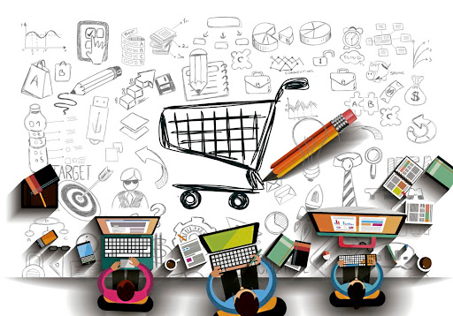

Shopping
This is also another core arena, where ict has been done numerous changes. In early decades shopping is bit harder since it was time-consuming and boring due to long ques. In today’s world shopping become one of the easiest things among the people due to the rapid development of ICT.
Buying groceries from local stores haven’t been changed much. People tend to buy groceries from supermarkets and local stores. However, their payment method has been changed. Since people before the twenty-first century mostly used cash in order to purchase groceries. But in now people are using credit or debit cards to pay their bills. There are new debit cards with “Pay Wave” facility which enables users to pay their bills just in one tap. some people’s state that using a regular card is easy and secure to purchase goods rather than using cash. But on the other hand, some might state that it is not. Because cards are working with Rfid technology so sometimes cards information can be stolen by hackers to steal money.
There is a large number of online shopping sites are available on the internet because a customer can order their product to their doorstep without taking a visit. This service enables people to select various items from their comfort zone. People use this service mostly to purchase expensive items like electronics because it provides many results with cheap prices so the user can select the preferred item they want.